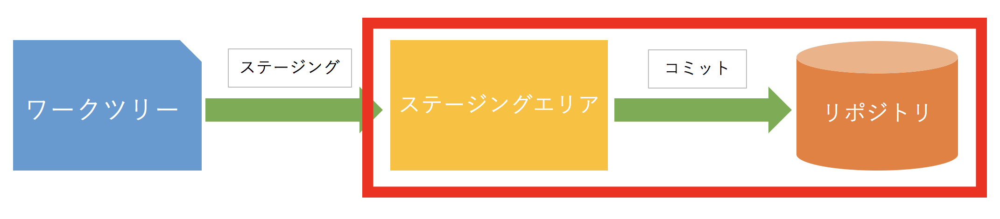

Gitの初期設定
Gitにユーザネームとメールアドレスを設定する(初回のみ).
$ git config --global user.name "Taro Tanaka"
$ git config --global user.email "taro@example.com"
また, 必須ではないがログやステータスを表示した際にハイライトされる設定もしておく.
$ git config --global color.ui true
Gitリポジトリの作成
$ mkdir hello-git
$ cd hello-git
$ git init
mkdirやcdはLinuxコマンドなどと呼ばれるもので, Linuxコマンドはコマンドラインでファイルやディレクトリの操作を行うために用意されている.
| コマンド名 | 説明 |
|---|---|
| mkdir | Make Directoryの略. 引数で指定した名前のディレクトリを作成する. |
| cd | Change Directoryの略. 引数で指定した名前のディレクトリに移動する. |
git initコマンドを叩くと, カレントディレクトリ以下に.gitという隠しディレクトリが生成される.
これにより, カレントディレクトリ以下にあるファイルはGitに管理され, Gitリポジトリという１つのまとまりとして扱われる.
また, 「Gitに管理される」というのは, Gitの各種コマンドが使える状態であるということでもある.
大まかな流れ

Gitの管理下に置かれた実際に作業をしているディレクトリのことをワークツリーと呼ぶ.
ワークツリーでファイルの作成や編集, 削除を行った後, 変更を記録したいファイルをステージングエリア(インデックスとも呼ぶ)にステージングする作業を行う.
その後, ステージングされたファイルをコミットする作業を行い, これで初めてGitリポジトリに変更履歴として残る.
ステージングする

ステージングするにはまずなにかしらファイルを作成する必要があるため,
$ touch hello.txt
としてファイルを作成する.touchコマンドは引数で指定した名前のファイル名を作成するコマンドである.
次にステージングを行う.
$ git add .
git addコマンドでワークツリーにある変更されたファイルをステージングエリアにステージングすることができる.
ここで, .(ドット)というのは, ワークツリーにあるファイルの変更を全てステージングエリアにステージングするという意味である.
ここでは.(ドット)を使って全てのファイルをステージングしているが, ファイル名を指定して特定のファイルの変更のみステージングさせることもできる.
ちなみに, 作成, 編集, 削除などを行ったファイルの状態を確認するには, git statusコマンドを使うと良い.
$ git status
On branch master
No commits yet
Untracked files:
(use "git add <file>..." to include in what will be committed)
hello.txt
nothing added to commit but untracked files present (use "git add" to track)
ステージングされているファイルは'Changes to be committed'の下に, ステージングされていないファイルは'Untracked files'の下に表示される.
コミットする

ステージングしたファイルはコミットと呼ばれる作業を行い, Gitの変更履歴に記録する必要がある.
コミットするには, git commitコマンドを使う.
また, このときに-mオプションを付けることによってコミットに対するメッセージを残すことができる.
$ git commit -m "Initial commit"
[master (root-commit) 23bbb67] Initial commit
1 file changed, 0 insertions(+), 0 deletions(-)
create mode 100644 hello.txt
コミットによってGitに記録された変更履歴は, git logコマンドで確認できる.
$ git log
commit 23bbb672088c1eeaeb1a4c48e81256812edf02e7 (HEAD -> master)
Author: Aska Yukawa <aska0720@gmail.com>
Date: Tue May 22 18:53:08 2018 +0900
Initial commit
...
閉じるときは:qと入力する.
ブランチとは

開発用とリリース用を分けたい場合や試験的な機能を作ってみたい場合など, 同じアプリケーションでも状況に応じて切り分けたい場合がある.
その問題を解決するのがGitにおけるブランチという概念である.
まずは現在存在するブランチを確認する.
ブランチの一覧を表示するにはgit branchコマンドを使う.
$ git branch
* master

現在自分がいるブランチには左側に*(アスタリスク)が表示される.
また, デフォルトではmasterブランチしか無いため, 必要に応じてブランチを作る必要がある.
次に, ブランチを生成する.
今回はtestという名前のブランチを生成してみる.
$ git branch test
これにより, masterブランチからtestブランチが新たに分岐された.

$ git branch
* master
test
上の実行結果から分かるように, 現在自分がいるブランチがmasterになっている.
そのため, testブランチで作業するにはmasterブランチからtestブランチに切り替える必要がある.
ブランチの切り替えにはgit checkoutコマンドを使う.
$ git checkout test
Switched to branch 'test'
この状態で再びブランチを確認してみると,
$ git branch
master
* test
のように, testの左側に*が付いていることから, ブランチが切り替わったことが見て取れる.